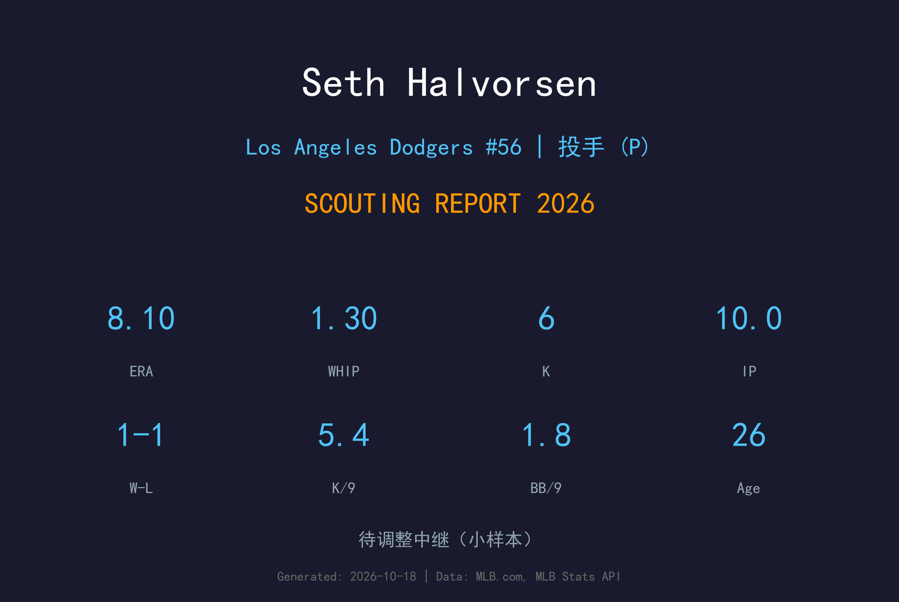
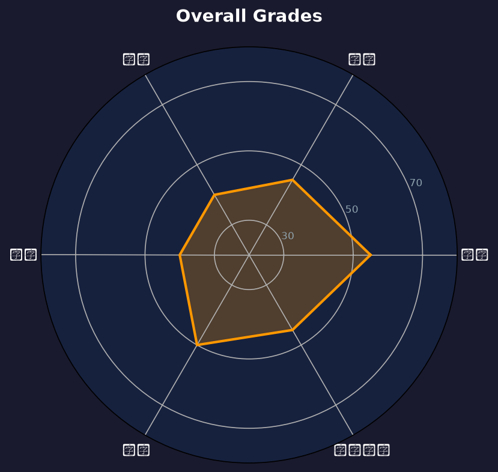

Los Angeles Dodgers #34 | 后援投手 | 小联盟

Seth Halvorsen 是道奇农场体系中的年轻右投，2024 年完成大联盟首秀。他的速球具备不错潜力，但变化球和控球仍在发展中。2026 年他 11 次后援出赛投出 8.10 ERA、WHIP 1.30，10 局仅 6 次三振，表现未达预期，赛季结束后已不在 40 人名单。目前属于小联盟深度后援，若能提升三振能力和变化球品质，仍有机会在未来 1-2 年争取回大联盟。
2024 年 8 月 30 日在洛杉矶道奇完成大联盟首秀，开启 MLB 生涯。
在 Oklahoma City Comets 与道奇大联盟名单之间多次升降，积累后援经验。
整季 11 次后援出赛、10.0 局，8.10 ERA、1.30 WHIP，仅 6 次三振，赛季末被移出 40 人名单。
| 赛季 | 球队 | G | GS | W | L | ERA | IP | K | BB | WHIP | SV |
|---|---|---|---|---|---|---|---|---|---|---|---|
| 2024 | Colorado Rockies | 12 | 0 | 2 | 1 | 1.46 | 12.1 | 13 | 2 | 0.81 | 2 |
| 2025 | Colorado Rockies | 42 | 0 | 1 | 2 | 4.99 | 39.2 | 36 | 21 | 1.56 | 11 |
| 2026 | Los Angeles Dodgers | 11 | 0 | 1 | 1 | 8.10 | 10.0 | 6 | 2 | 1.30 | 0 |
94-97 mph
速球是 Halvorsen 最好的武器，均速约 95-96 mph，occasionally 可上 97 mph。具备成为后援主力速球的基础，但转速和位移还有提升空间。
83-86 mph
主要变化球，但 sharpness 和 consistency 不足，常被打者识别。需要增加横向位移和提高落点控制。
86-89 mph
使用频率低，对左打者的 crossover 效果有限，需要继续打磨。若能发展出可靠的变速球，将显著提升他的上限。
2025 年大联盟样本 K/9 约 8.2，2026 年更进一步下滑：10.0 局仅 6 次三振，K/9 5.40，远低于大联盟后援平均水平。速球虽然有球速，但转速和位移不足以制造挥空，他需要提升滑球品质和配球策略。单凭速球难以在大联盟长期生存。
BB/9 在小联盟阶段偏高，但 2026 年大联盟 10.0 局仅 2 次保送，BB/9 1.80，控球反而是他今年唯一拿得出手的环节。讽刺的是控球改善并没有带来好结果——8.10 ERA 主要来自被扎实击中（WHIP 1.30 里大量安打）。他需要改善的是球路品质和进垒点，而非单纯减少保送。
2026 年他主要在小联盟出赛，仅 11 次大联盟后援登板，属于名单边缘的深度选项。他的身体条件让他具备耐用型牛棚投手的体型，可在比分拉开时吃局数，但目前道奇牛棚深度充足，他的顺位很靠后。
赛季末已被移出 40 人名单。26 岁仍有发展空间，但时间不多：如果滑球和速球转速在未来 1 年没有明显进步，他大概率长期在小联盟 / 其他球队小联盟合约之间漂泊；若能找回 2024 年首秀时 1.46 ERA 的压制力，才有机会重返大联盟。

潜力后援 / 名单边缘
B- 级
Halvorsen 需要在 3A 持续稳定出赛，把 K/9 拉回到 8 以上并提升滑球命中率。2026 年 11 场 8.10 ERA 的表现让他的前景蒙上阴影，赛季末已离开 40 人名单，明年春训将是他证明自己的最后窗口之一。道奇农场深厚，他需要在与众多年轻后援的竞争中脱颖而出，否则可能流向其他球队的小联盟体系。
Seth Halvorsen 出生于芝加哥，2024 年 8 月 30 日在洛杉矶道奇完成大联盟首秀。他在道奇农场体系中逐渐从先发转向后援角色，依靠速球潜力获得 40 人名单一席。2025 年在 3A 与大联盟之间往返，2026 年仍处于职业生涯早期发展阶段。他在小联盟时期展现了一定的速球压制力，但控球和变化球发展较慢，目前仍在道奇体系的培养计划中。